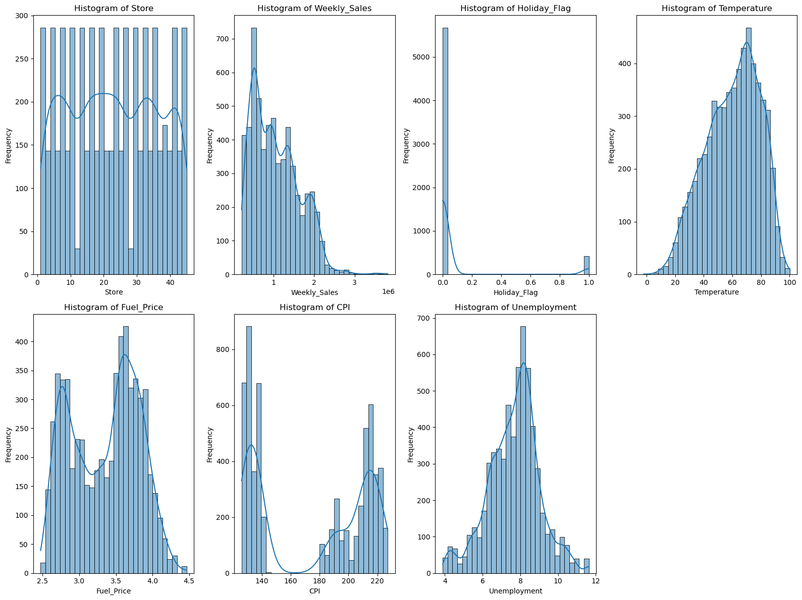

Gambar 1: Hasil EDA sebelum filtering Unemployment
Visualisasi di atas menunjukkan distribusi masing-masing fitur numerik. Terlihat bahwa variabel Weekly_Sales memiliki distribusi yang sangat skewed, Holiday_Flag didominasi oleh data non-holiday, dan Unemployment memiliki beberapa nilai ekstrim yang akan diproses lebih lanjut.
Visualisasi EDA After Filtering
Gambar 2: Hasil EDA sesudah filtering Unemployment
Setelah dilakukan filtering pada variabel Unemployment dengan menghapus nilai-nilai ekstrim di atas 12, distribusi data menjadi lebih bersih dan mendekati distribusi normal. Proses ini membantu meminimalkan pengaruh outlier yang dapat menyebabkan bias pada proses modeling. Variabel lainnya seperti Weekly_Sales dan Holiday_Flag tidak mengalami perubahan signifikan karena filtering hanya dilakukan pada Unemployment.